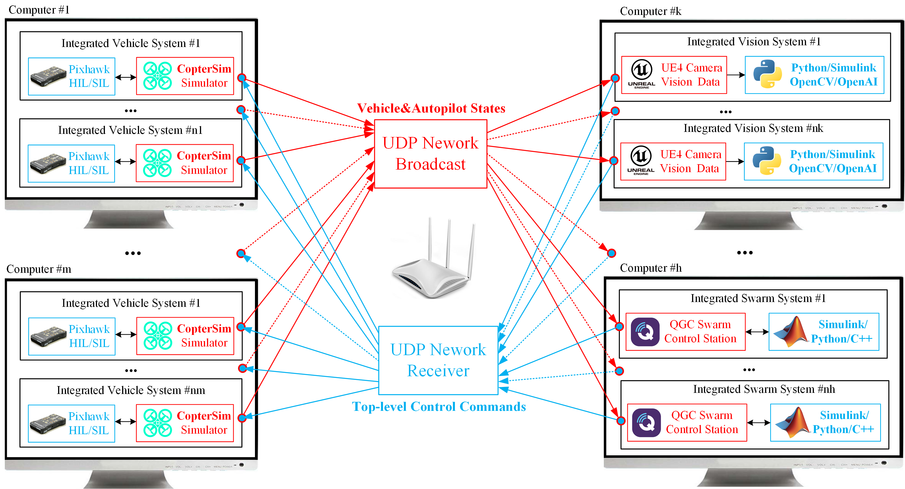

5. UAV Swarm Control¶
5.1. Distributed Simulation Framework¶
RflySim adopts totally distributed framework, you can extend to any number of computers, vehicles, observation views, etc. The basic software structure is presented in the figure below.

The hardware structure is presented in the following figure.

5.2. Key Problems and Solutions¶
Problem 1: it is ineffective to create simulated vehicles&Pixhawks one by one
Solution: One-key script to start and initialize all programs and parameters
Problem 2: How to display all vehicles in the same 3D program
Solution: we use UDP network to broadcast vehicle states, and RflySim3D dynamically create vehicle 3D model when receiving new data. Users can also create other 3D models such as obstacle, people, tracking target, checker board .
Problem 3: The network become congested when vehicle number is too large
Solution: we have multiple communication protocols, simplified message can be applied when vehicle number is large to improve the real-time performance of communication.
Problem 4: It is too costly and inefficient to perform large scale swarm simulation with Pixhawk hardware.
Solution: we provide PX4 SITL simulation mode, under which the PX4 Autopilot software is running in the windows instead of Pixhawk hardware.
Problem 5: How much vehicle can be simulated on one computer?
Answer: the QGroundControl and RflySim3D occupy most of the computing resource, and the CopterSim + PX4 SILT only need few computing resources. For normal high-performance PCs, we can run at least 15 vehicles with CopterSim + PX4 SITL, and at least 30 vehicles with CopterSim + PX4 HITL. The number will increase if the QGroundControl, RflySim3D, and MATLAB are not running on this computer
Problem 6: Simulink will significantly slow down when too much vehicles to be controlled, which may affect the real-time performance
Solution: we provide script to compile Simulink controller to exe file, which can control large-scale UAV swarm simulation system with few computing resource
Problem 7: How to ensure controller can work in real system as in simulation
Solution 1: All vehicle data received by Simulink is the actual data from Pixhawk through Mavlink instead of ideal data from simulator, and the output of Simulink is also Mavlink message to Pixhawk.
Solution 2: Our swarm communication interfaces ensure the Simulink can control actual UAV swarm system when each UAV is connected to the same LAN through WIFI or radio telemetry. User can also generate the Simulink to C/C++ code to developing a swarm ground control system.